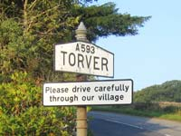
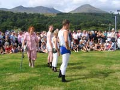

Torver Tourist Information

It stands on the old packhorse trail to the Duddon Valley, and at one time boasted a railway line used for transporting stone and slate from the nearby quarries.
{kind=link}
It is an excellent starting place for the not too demanding walks on the surrounding Furness Fells. There's an olde worlde pub and a 120 year old church.

{kind=link}
A newly constructed 1 kilometre trail along a disused railway line between Torver and Coniston has been opened for use by walkers, cyclists and horse riders.
Bus connections operate between Coniston, Ulverston, and Barrow-in-Furness, but the nearest rail links are Foxfield and Millom.
There is of course a good selection of Bed & Breakfast, Guest Houses, self-catering, caravan and camping sites in the locality; all of a high standard.
{kind=link}
How to get there:
By rail:
From the south, change at Preston or Lancaster for Foxfield on the route to Barrow in Furness.
From the north, change at Carlisle for Foxfield.
Torver is less then 10 miles from Foxfield by road.
By road:
Find Torver on the A593 between Ambleside and Broughton-in-Furness.
Or, from J36 of the M6 motorway via the A590 to Greenodd, then the A5092 to Lowick Green before joining the A5084 to Torver.
Attractions in Torver |
Fells and open spaces
The hamlet of Torver stands a couple of miles to the west of Coniston and is perfectly placed as a starting point from which to begin exploration of the Coniston and Furness Fells and the beautiful Duddon Valley.
Walks
Choices of casual low level walks, lakeside strolls and the more taxing fell walks are wide and plentiful. Torver Common and Long Moss Tarn fall in to the former category and offer fine views. The carpets of springtime blooms in nearby Torver Woods produce delightful displays of colour. The more strenuous ascent of the Old Man passing the disused slate and copper mine workings is an all time favourite of walkers, who, on a clear day, are rewarded with a magnificent panorama of surrounding fells, Morecambe Bay and a sight even of the Blackpool Tower. Great photo opportunities here. Alternatively, the visitor may use the Coniston Launch from Torver Jetty to reach the starting points of other scenic walks to the Furness Fells.
Torver Jetty
Board a Coniston Launch from the floating but firmly tethered landing stage to lakeside destinations of Brantwood, Sunny Bank, Lake Bank, Water Park and Coniston Pier head. No road access for cars. Walkers only.
Picnic sites
Close to Torver are wooded glades, open shorelines with fell views and the wooden tables and benches at Rigg Wood. Ideal on sunny days and plenty of room for the children.
Sailing / Boating
Contact the Coniston Boating Centre for details of all Watersports including sailing, canoeing, rowing, windsurfing, kayaking and hire of electrically powered boats. Tuition and advice available for all abilities from locally based qualified instructors.
Coniston Launch
Liesurely lake cruises on the timber launches “Ransome” and “Ruskin”. A cruise on one of these solar powered launches is a great way to take in the views. Readers of Arthur Ransomes “Swallows and Amazons” will be interested in attempting to identify the real life locations on which his book is based. Can you find “Wild Cat Island” or “Kanchenjunga”? www.conistonlaunch.co.uk
Steam Yacht Gondola
Daily sailings from Coniston Pier between March and October on board this unique steam powered craft of 1920’s vintage and the oldest in the north of England. On board commentaries point out areas of special interest to be seen en route. www.steamboatgondola.co.uk
Fishing
Esthwaite Water Trout Fishery. Year round fishing from the largest stocked lake in the north west of England. www.hawksheadtrout.com
Closer to Torver is Goats Water overlooked by Dow Crag and a favourite of trout fishers.
Grizedale Forest Park
The Forest Park is a well loved Lake District family attraction a few miles from Torver. Forest trail walks, cycle paths, wood sculptures alongside the trails, high level “go ape” adventure in the treetops, café, gift shop, cycle hire, picnic areas, expert advice and information on site. Good parking at the Visitor Centre and also at the new facilities a couple of hundred yards beyond. During late November of each year much of the area is given over to stages of the Grizedale Motor Rally. Please note that during this short period, some areas are closed to walkers and cyclists.
Brantwood
The former home of John Ruskin. The house, a mile or so from Torver, stands in a charming setting of mountainside gardens and land stretching for 250 acres with magnificent views of the lake and fells beyond. The house is filled with Ruskin memorabilia, paintings and furnishings. Make a date to visit the outdoor theatre or a drawing room concert.
www.brantwood.org.uk
Tarn Hows
The beautiful setting of the tarn with level walks and clear views to the fells is said to be the most photographed water in the Lake District. The grassy slopes on one side provide a comfortable grandstand and picnic area. The tarn is easily reached from Torver and has good parking although at the height of the season the parking areas can be crowded. However, if you do not wish to go by car, or, walk, the Mountain Goat Bus Company operates a service which connects with the Coniston Water ferry service.
Hill Top
Beatrix Potter’s former home is located in the hamlet of Near Sawrey. This is the idyllic cottage from where the children’s author created and wrote of Tom Kitten, Samuel Whiskers and Jemima Puddleduck and is one of the most visited literary shrines in the world. The cottage is not too far from Torver and can be reached via the lovely village of Hawkshead which is the home of the Beatrix Potter Gallery.
Email: hilltop@nationaltrust.org.uk and beatrixpottergallery@nationaltrust.org.uk
Nearest Towns
Coniston Ulverston Barrow
Food and Drink in Torver |
Wilson’s Arms
Dine and wine in a 14th C pub restaurant. Menus produced from locally sourced food. Open fires and beams.
Transportation in Torver |